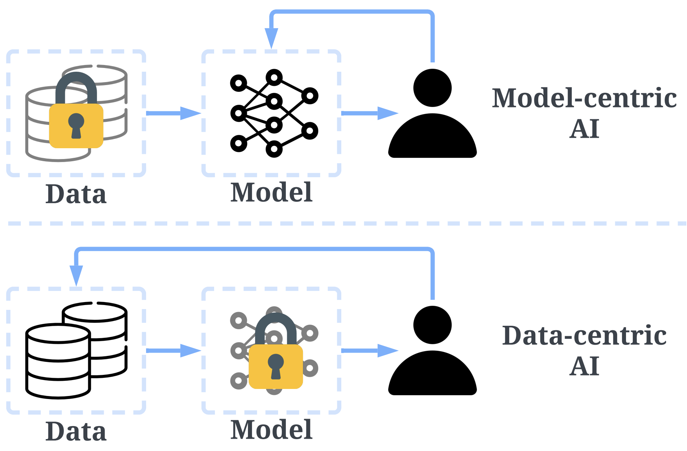
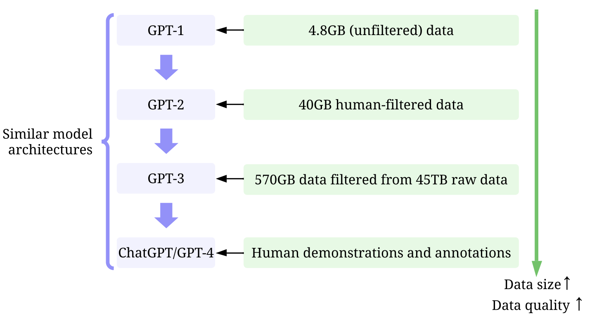

KDD 2023 Tutorial 1:30 pm to 4:30 pm, Tuesday, August 8, 2023 Long Beach Convention & Entertainment Center
About

What is Data-centric AI (DCAI)?
DCAI is an emerging field that focuses on engineering data to improve AI systems with enhanced data quality and quantity.
DCAI shifts our focus from model to data.
It is important to note that "data-centric" differs fundamentally from "data-driven", as the latter only emphasizes the use of data to guide AI development, which typically still centers on developing models rather than engineering data.

Why DCAI?
Large and high-quality training data are the driving force of recent successes of GPT models, while model architectures remain similar, except for more model weights.
When the model becomes sufficiently powerful, we only need to engineer prompts (inference data) to accomplish our objectives, with the model being fixed.
We invite you to attend our KDD tutorial. We will also record the presentation and upload the video to this website for those unable to attend. Stay tuned!